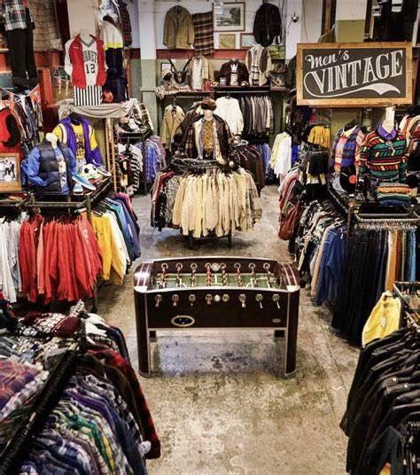

En un mundo donde el consumo rápido ha dominado la industria de la moda, cada vez más personas están descubriendo el valor —económico, ético y estético— de comprar ropa de segunda mano. Ya no se trata solo de ahorrar dinero, sino de tomar decisiones conscientes que benefician a tu estilo personal, al planeta y a tu bolsillo.
La moda es una de las industrias más contaminantes del mundo. Comprar ropa de segunda mano reduce la demanda de producción nueva, lo que significa menos agua utilizada, menos emisiones de carbono y menos residuos textiles en vertederos. Cada prenda que reutilizas alarga su vida útil y evita que termine prematuramente como basura.
Las prendas de segunda mano suelen costar una fracción del precio original, incluso si están en excelente estado o son de marcas reconocidas. Puedes encontrar ropa de calidad, hecha para durar, por mucho menos de lo que gastarías en fast fashion. ¿Lo mejor? Muchas veces puedes encontrar piezas únicas, de diseño o edición limitada.
La ropa vintage y de segunda mano tiene historia y carácter. No estás comprando una prenda genérica que cientos de personas más tienen. Estás eligiendo una pieza que probablemente tenga una historia detrás, un corte diferente y un diseño con más personalidad.
Comprar de segunda mano te hace pensar antes de comprar. En lugar de caer en el impulso de las tendencias del momento, aprendes a valorar lo que realmente necesitas y lo que se adapta a tu estilo. Es una forma de consumir con intención, no por impulso.
Cuando compras ropa de segunda mano en tiendas físicas u online como la nuestra, apoyas a emprendedores, pequeños comercios y personas que trabajan con pasión por la moda sostenible. Es una forma de mantener viva una economía más humana y justa.
